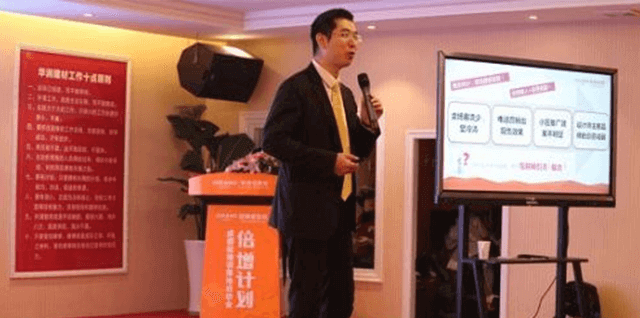

欧神诺大云商平台成都首站落地倍增计划顺利启航
2016-03-18
欧神诺陶瓷2016新起点出发新征程
走在时代的岔路口，2016年欧神诺陶瓷将会在新起点上出发，历时三年多打造的大云商平台3月3日率先在成都首站落地，之后全川普及。营运服务系统为经销商提供颠覆行业模式的导购客户管理系统、3D云设计系统及网络营运系统，得到了经销商的大力支持，云商营运服务系统成都首站落地倍增计划顺利启航，第一阶段工作正式启动。
3月3日营运服务平台率先在成都开展3天的系统培训，参加人员共140余人，包括成都华润的员工及来自西部大区其他地方的员工，例如西安、重庆、南宁等。欧神诺陶瓷董事长鲍杰军先生出席并发言，他指出传统企业只关注产品，互联网企业则重点关注消费过程，传统企业应该充分利用互联网这个有效的工具，促进销售。而欧神诺云商营运服务系统投入超过1个亿，为经销商提供连接互联网与大数据的新型销售系统。欧神诺陶瓷营运管理中心副总经理兼云商管理中心总监谭宜颂先生宣布启动大云商营运服务平台成都首站落地倍增计划，他对大云商平台的未来充满信心，只要厂商一体，万众一心，营运服务平台落地将会带给经销商无限便利。